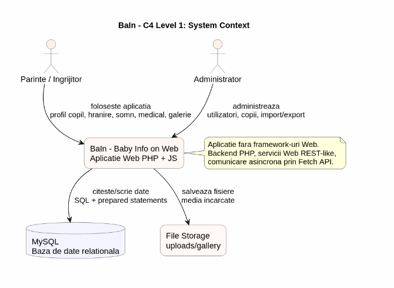
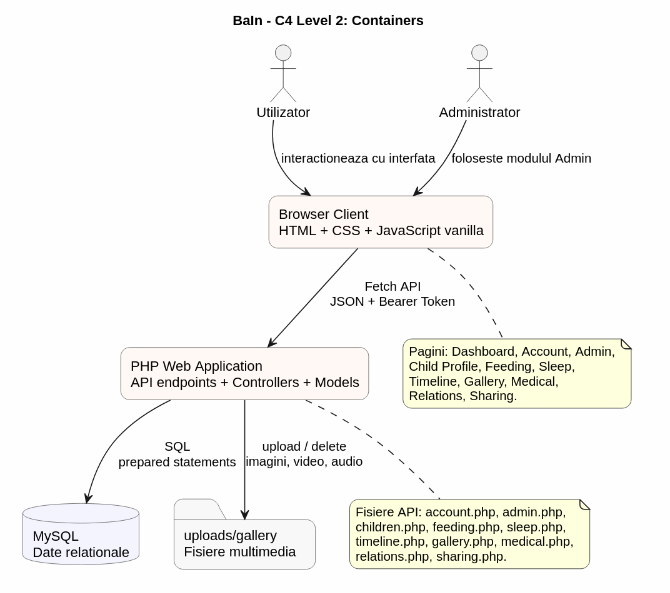
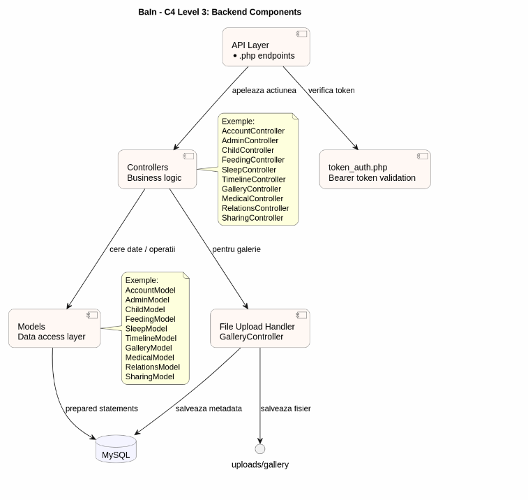
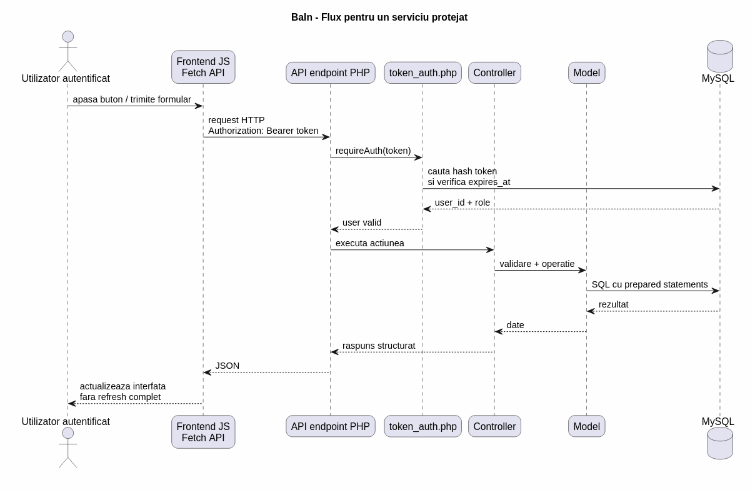

BaIn (Baby Info on Web)
1. Rezumat
BaIn (Baby Info on Web) este o aplicatie Web construita pentru parinti si ingrijitori, cu scopul de a strange intr-un singur loc informatiile importante despre copil. In loc ca datele despre hranire, somn, sanatate, fotografii sau momente importante sa fie imprastiate in aplicatii diferite, BaIn le organizeaza in module clare si usor de accesat.
Aplicatia a fost dezvoltata fara framework-uri Web, folosind HTML, CSS, JavaScript vanilla, PHP si MySQL. Am ales aceasta varianta pentru a avea control direct asupra felului in care clientul comunica cu serverul. Partea de backend este organizata in API-uri, controllere si modele, iar fiecare pagina comunica asincron cu serverul prin Fetch API si raspunsuri JSON.
Proiectul include autentificare cu tokenuri, modul de administrare, import si export de date in CSV si JSON, design responsive, tema light/dark si schimbarea limbii intre romana si engleza. In plus, aplicatia acopera modulele principale ale temei: profil copil, hranire, somn, timeline, galerie, medical, relatii si partajare.
2. Introducere
Ideea proiectului a pornit de la o problema practica: informatiile despre copil sunt de obicei pastrate in mai multe locuri. Parintele poate avea fotografii in galeria telefonului, notite despre mese intr-o aplicatie separata, programari medicale in calendar si conversatii despre copil in aplicatii de mesagerie. In timp, aceasta organizare devine greu de urmarit, mai ales cand exista mai multe persoane implicate in ingrijirea copilului.
BaIn incearca sa rezolve aceasta problema printr-o aplicatie Web modulara. Fiecare parte importanta din viata copilului are propriul modul: hranire, somn, medical, galerie, timeline, relatii si partajare. Utilizatorul poate selecta copilul si poate vedea informatiile relevante fara sa schimbe aplicatii sau sa caute date in locuri diferite.
Am pus accent pe partea de server, pe servicii Web, pe comunicare asincrona, pe baza de date relationala si pe separarea codului in module usor de inteles. Interfata a fost gandita sa fie simpla, calda vizual si potrivita pentru o aplicatie de familie.
3. Cerinte si restrictii
Nu am folosit framework-uri de frontend sau backend, iar comunicarea dintre pagini si server se face prin servicii Web proprii. Am folosit PHP pentru server, MySQL pentru baza de date si JavaScript vanilla pentru cererile asincrone si actualizarea interfetei.
| Aspect urmarit | Cum apare in proiect |
|---|---|
| Aplicatie Web axata pe server | Am implementat backendul in PHP, cu fisiere API separate, controllere pentru logica si modele pentru accesul la baza de date. Pagina nu lucreaza direct cu baza de date, ci doar prin serviciile PHP. |
| Fara framework-uri | Am folosit HTML, CSS, JavaScript vanilla si PHP simplu. Nu am folosit React, Vue, Angular, Laravel, Symfony sau alte framework-uri Web. |
| Servicii Web si Ajax | Fiecare modul important are endpointuri PHP care returneaza JSON. Frontendul apeleaza aceste endpointuri cu Fetch API, deci operatiile se fac fara reincarcarea completa a paginii. |
| Baza de date relationala | Am folosit MySQL/MariaDB. Datele sunt organizate in tabele pentru utilizatori, copii, tokenuri, mese, somn, timeline, galerie, medical, relatii, partajare si notificari. |
| Responsive design | Am construit interfetele cu griduri, carduri si media queries. Pe ecrane mici, meniurile si panourile se rearanjeaza pentru a ramane utilizabile. |
| Prevenire SQL Injection | Am folosit prepared statements in modelele PHP, astfel incat valorile introduse de utilizator sa nu fie concatenate direct in interogarile SQL. |
| Prevenire XSS | Datele sunt transmise ca JSON, iar continutul afisat dinamic este controlat in JavaScript. In zonele unde se insereaza text venit din baza de date, am folosit escapare pentru a evita interpretarea lui ca HTML. |
| Import/export CSV si JSON | In modulul Admin am implementat import si export pentru JSON si CSV. JSON poate fi folosit si pentru toate tabelele, iar CSV pentru tabela selectata. |
| Modul propriu de administrare | Am construit o pagina Admin separata, disponibila doar pentru utilizatorii cu rol de administrator. De acolo se pot vedea statistici, utilizatori, copii si se pot importa/exporta date. |
| Management online al codului | Am lucrat cu GitHub, repository-ul proiectului fiind disponibil la adresa mentionata in metadatele raportului. |
4. Functionalitati
Aplicatia este impartita in module pentru ca utilizatorul sa poata gasi rapid zona de care are nevoie. Am incercat ca fiecare modul sa rezolve o nevoie concreta, nu doar sa existe ca pagina separata.
4.1 Autentificare
Modulul de autentificare permite crearea unui cont, autentificarea, logout-ul si resetarea parolei. Pentru conturile de administrator exista un cod optional. Dupa login, serverul genereaza un token, iar frontendul il trimite apoi la fiecare cerere protejata.
4.2 Account
Pagina My Account este locul in care utilizatorul isi gestioneaza profilul. De aici poate schimba numele, poza de profil, limba si tema aplicatiei. Aceste preferinte sunt globale, deci dupa salvare sunt aplicate si in restul paginilor.
4.3 Dashboard
Dashboardul functioneaza ca o pagina de start dupa autentificare. El strange informatii scurte despre copilul selectat: hranire, somn, amintiri, medical, relatii, program pentru ziua curenta si actiuni rapide catre module.
4.4 Profil copil
In profilul copilului se salveaza informatiile principale: nume, data nasterii, gen, grupa sanguina, alergii, educatie, inaltime, greutate, IMC, activitati preferate si descriere. Tot aici pot fi adaugate repere si ingrijitori.
4.5 Hranire
Modulul de hranire permite adaugarea meselor si afisarea lor intr-un jurnal. Utilizatorul poate salva alimente preferate, reactii si notite nutritionale. Pagina calculeaza si un sumar zilnic pentru mese, lichide si estimari.
4.6 Somn
Modulul de somn gestioneaza somnul de zi, somnul de noapte, rutina si notitele. Utilizatorul poate adauga, edita si sterge inregistrari. Pagina afiseaza statistici precum durata totala, ora de culcare, ora de trezire si calitatea somnului.
4.7 Timeline
Timeline-ul pastreaza momentele importante din viata copilului. Momentele pot fi filtrate pe categorii precum hranire, somn, progres, medical sau social. Un moment poate fi deschis pentru detalii sau trimis catre pagina de partajare.
4.8 Galerie
Galeria permite incarcarea fisierelor multimedia pentru copilul selectat. Am inclus suport pentru imagini, video si audio, iar afisarea este facuta intr-un grid responsive. Exista filtre pentru tipurile de fisiere.
4.9 Medical
Pagina Medical centralizeaza vaccinari, programari, tratamente, alergii, notite medicale si contacte de urgenta. Este gandita ca o fisa medicala simplificata, utila pentru urmarirea informatiilor de baza.
4.10 Relatii
Modulul Relatii pastreaza conexiunile copilului cu alte persoane: frati, surori, veri, prieteni sau colegi. Exista statistici, cautare dupa nume si filtrare dupa tipul relatiei.
4.11 Partajare
Modulul Sharing permite selectarea unui moment si salvarea unei actiuni de partajare. Am inclus variante pentru familie, link local, simulare sociala si RSS. Utilizatorul poate alege si nivelul de confidentialitate.
4.12 Administrare
Adminul este partea prin care administratorul vede statistici si gestioneaza datele aplicatiei. De aici se pot modifica roluri, sterge utilizatori sau copii si importa/exporta date in formate deschise.
5. Arhitectura aplicatiei
Am organizat proiectul astfel incat fiecare zona sa aiba un rol clar. Partea de interfata ramane separata de logica de server, iar serverul ramane separat de accesul direct la baza de date. Aceasta impartire ne-a ajutat sa lucram in echipa mai usor, pentru ca un modul putea fi dezvoltat sau corectat fara sa afecteze toate celelalte pagini.
| Strat | Rol in proiect | Exemple |
|---|---|---|
| HTML/CSS | Defineste structura si aspectul paginilor. Fiecare modul are propria pagina si propriul fisier CSS, iar elementele comune sunt definite in global.css. | dashboard.html, feeding.css, sharing.html |
| JavaScript | Gestioneaza interactiunea cu utilizatorul, trimite cereri asincrone, citeste raspunsurile JSON si actualizeaza interfata. | dashboard.js, sleep.js, timeline.js |
| API PHP | Primeste requesturile de la client, verifica metoda si actiunea ceruta, apoi apeleaza controllerul potrivit. | children.php, admin.php, medical.php |
| Controllers | Contin logica principala a aplicatiei: verificari, pregatirea datelor, decizia asupra actiunii si raspunsul catre client. | AdminController.php, FeedingController.php, SharingController.php |
| Models | Izoleaza accesul la baza de date. Aici sunt interogarile SQL si operatiile de citire, inserare, actualizare sau stergere. | ChildModel.php, SleepModel.php, GalleryModel.php |
| Config si Utils | Contin conectarea la baza de date si functii comune, in special verificarea tokenului pentru paginile protejate. | db.php, token_auth.php |
Fluxul obisnuit este simplu: utilizatorul apasa un buton, JavaScript trimite un request catre backend, backendul verifica tokenul, controllerul proceseaza actiunea, modelul lucreaza cu baza de date, iar raspunsul se intoarce in JSON. Interfata este apoi actualizata fara refresh complet.
6. Modelul C4
Pentru a descrie arhitectura am folosit Modelul C4. In raport sunt incluse patru niveluri: context, containere, componente backend si fluxul unui serviciu protejat.
6.1 System Context
La nivel de context, BaIn este sistemul central. Parintele sau ingrijitorul foloseste aplicatia pentru a introduce si consulta date despre copil. Administratorul foloseste acelasi sistem, dar cu drepturi suplimentare pentru managementul datelor.

6.2 Containers
La nivel de containere, aplicatia este impartita in browser client, aplicatie PHP, baza de date si zona de fisiere incarcate. Browserul nu comunica direct cu baza de date, ci doar cu API-ul PHP.

6.3 Backend Components
Backendul este impartit in endpointuri API, utilitarul de autentificare, controllere si modele. Aceasta structura este folosita in toate modulele principale, ceea ce face codul mai usor de urmarit.

6.4 Flux pentru un serviciu protejat
Diagrama de flux arata ce se intampla cand utilizatorul apeleaza un endpoint protejat: tokenul este verificat, controllerul executa actiunea, modelul lucreaza cu baza de date si rezultatul se intoarce in frontend.

7. Modelarea datelor
Baza de date este construita in jurul utilizatorului si al copiilor asociati acestuia. Aceasta structura permite ca acelasi cont sa poata gestiona mai multi copii, iar fiecare copil sa aiba propriile date pentru hranire, somn, timeline, galerie, medical, relatii si partajare.
| Tabela | Rol |
|---|---|
users | Conturile utilizatorilor si rolurile lor. |
auth_tokens | Tokenurile de autentificare, salvate hash-uit si cu data expirarii. |
account_profiles | Date suplimentare despre profil, inclusiv poza. |
account_settings | Preferinte precum limba, tema si timezone. |
children | Profilurile copiilor asociate unui utilizator. |
child_caregivers | Ingrijitori si persoane cu acces la profilul copilului. |
child_milestones | Repere importante din dezvoltarea copilului. |
feeding_meals | Mesele copilului. |
feeding_notes | Notite nutritionale. |
feeding_favorites | Alimente preferate. |
feeding_preferences | Reactii si preferinte alimentare. |
sleep_logs | Inregistrari de somn, rutina si notite. |
timeline_moments | Momente importante din viata copilului. |
gallery_media | Fisiere multimedia incarcate si asociate copilului. |
gallery_albums | Organizare pentru galerie. |
medical_records | Vaccinari, vizite, medicatie, alergii si note medicale. |
emergency_contacts | Contacte de urgenta. |
relations | Relatii sociale ale copilului. |
relation_notes | Note asociate relatiilor. |
share_records | Istoric pentru actiunile de partajare si RSS. |
notifications | Notificari afisate in aplicatie. |
Datele provin in principal din formularele completate de utilizator. Am preferat sa nu depindem de API-uri externe pentru datele copilului, deoarece acestea sunt informatii private. Pentru fisierele multimedia, serverul salveaza fisierul in folderul de upload, iar in baza de date pastreaza calea si metadatele necesare.
8. Servicii Web si Ajax
Comunicarea dintre interfata si server se face prin servicii Web REST-like. Am folosit denumirea REST-like pentru ca endpointurile sunt organizate pe fisiere PHP si pe actiuni transmise prin parametri, nu pe rute REST pure. Totusi, folosim metode HTTP precum GET, POST, PUT si DELETE si raspunsuri JSON.
| Endpoint | Ce face |
|---|---|
login.php | Autentifica utilizatorul si creeaza tokenul. |
register.php | Creeaza cont nou si poate seta rol admin pe baza codului. |
check_auth.php | Verifica tokenul si intoarce utilizatorul curent. |
account.php | Gestioneaza profilul si preferintele contului. |
children.php | Listeaza, adauga, editeaza si sterge copii. |
feeding.php | Gestioneaza mesele, notitele, favoritele si preferintele alimentare. |
sleep.php | Gestioneaza somnul, rutina, notitele si statisticile. |
timeline.php | Gestioneaza momentele importante. |
gallery.php | Gestioneaza uploadul si listarea fisierelor media. |
medical.php | Gestioneaza datele medicale si contactele urgente. |
relations.php | Gestioneaza relatiile copilului. |
sharing.php | Gestioneaza partajarile, istoricul si RSS-ul local. |
admin.php | Gestioneaza partea de administrare si import/export. |
In frontend, fiecare pagina are propriul fisier JavaScript. Acesta citeste tokenul din sessionStorage, il trimite in headerul Authorization si apoi actualizeaza interfata pe baza raspunsului primit.
9. Securitate
Pentru proiect am implementat masurile de securitate de baza cerute: protectie impotriva SQL Injection, reducerea riscului de XSS si controlul accesului la paginile protejate. Nu am tratat securitatea ca pe un element separat de aplicatie, ci ca pe o parte a fluxului normal de lucru al backendului.
9.1 Autentificare cu tokenuri
Am ales autentificarea cu tokenuri pentru ca se potriveste mai bine cu arhitectura pe servicii Web. Dupa login, tokenul este trimis de client la fiecare cerere. Serverul nu presupune ca utilizatorul este autentificat doar pentru ca a accesat o pagina, ci verifica tokenul de fiecare data.
Authorization: Bearer <token>Tokenul este salvat in baza de date hash-uit. Astfel, daca cineva ar vedea continutul tabelei de tokenuri, nu ar primi direct tokenurile reale. Tokenul are si data de expirare, iar cererile cu token expirat sunt respinse.
9.2 Autorizare admin
Modulul Admin nu este protejat doar prin ascunderea linkului in meniu. Linkul este ascuns pentru utilizatorii normali ca sa nu incarce interfata inutil, dar verificarea reala este facuta pe server. Daca rolul nu este admin, serverul returneaza eroare 403.
9.3 SQL Injection
In modelele PHP folosim prepared statements. Datele venite din formulare sunt transmise ca parametri, nu lipite direct in query. Aceasta abordare reduce riscul ca un utilizator sa modifice query-ul SQL prin valori introduse in campuri.
9.4 XSS
Datele sunt transmise intre server si client in format JSON. In paginile unde construim continut HTML din date dinamice, folosim control asupra valorilor si escapare pentru textele care pot veni de la utilizator. Scopul este ca un text introdus intr-un formular sa fie afisat ca text, nu interpretat ca HTML sau JavaScript.
10. Interfata si design
Interfata a fost gandita pentru o aplicatie folosita de parinti, deci am ales o directie vizuala calda si prietenoasa. Culorile principale sunt nuante de roz, piersica si crem. Am folosit carduri, colturi rotunjite si iconuri simple pentru ca paginile sa para mai usor de parcurs.
Meniul lateral apare pe paginile principale si ofera acces direct catre module. Pe mobil, unde un meniu lateral fix ar ocupa prea mult spatiu, acesta se transforma intr-un meniu care poate fi deschis cu butonul hamburger. Astfel, aceeasi aplicatie ramane folosibila si pe ecrane mici.
10.1 Preferinte globale
Din pagina Account, utilizatorul poate schimba limba si tema. Tema dark este aplicata prin clasa dark-mode, iar culorile se schimba prin variabile CSS. Pentru limba, am folosit un fisier comun translate.js, cu traduceri directe si reguli regex pentru texte dinamice.
10.2 Validarea interfetei
Validarea HTML/CSS a fost inclusa in procesul de finalizare al proiectului. Aceasta a fost facuta pentru a corecta problemele de structura HTML, de stil CSS si de responsive design in paginile proiectului.
11. Modul administrare
Modulul Admin este una dintre partile importante ale proiectului, deoarece arata ca aplicatia nu este doar o colectie de pagini pentru utilizator, ci are si o zona de control. Administratorul poate vedea statistici, utilizatori si copii, poate schimba roluri si poate sterge entitati.
In plus, in Admin am pus importul si exportul de date, pentru ca este locul natural in care un utilizator cu drepturi ridicate ar gestiona datele aplicatiei. Interfata are selector pentru tabela si butoane separate pentru JSON si CSV.
12. Import si export
Am implementat import/export in formate deschise pentru a permite mutarea, salvarea sau restaurarea datelor. JSON este potrivit pentru structuri mai complexe si pentru exportul tuturor tabelelor, iar CSV este potrivit pentru date tabelare simple.
- export JSON pentru o tabela selectata;
- export JSON pentru toate tabelele;
- export CSV pentru tabela selectata;
- import JSON din fisier;
- import CSV pentru tabela selectata.
Pentru CSV am pastrat regula ca trebuie selectata o tabela concreta, deoarece un fisier CSV nu poate reprezenta natural mai multe tabele relationale in acelasi timp. Pentru JSON, aplicatia poate lucra cu o structura mai bogata.
13. Testare si validare
Testarea a fost facuta manual, prin parcurgerea fluxurilor reale ale aplicatiei. Am verificat atat scenarii normale, cat si cazuri in care lipseste tokenul sau utilizatorul nu are dreptul de acces.
13.1 Scenarii testate
- inregistrare cont si login;
- logout si acces fara token;
- resetare parola;
- adaugare, editare si stergere copil;
- schimbare poza profil;
- schimbare tema si limba;
- adaugare masa, aliment preferat si notita nutritionala;
- adaugare, editare si stergere somn;
- adaugare moment in timeline si filtrare pe categorii;
- upload media in galerie;
- adaugare vaccin, programare, medicatie, alergie sau contact urgent;
- adaugare relatie si filtrare dupa tip;
- partajare moment si actualizare RSS;
- folosirea modulului Admin;
- import/export CSV si JSON;
- verificarea paginilor pe dimensiuni diferite de ecran.
15. Livrabile
Toate livrabilele sunt incluse in proiect sau sunt atasate impreuna cu acesta. Codul sursa se afla in repository-ul GitHub mentionat in raport, iar documentatia este livrata in format Scholarly HTML.
- codul sursa complet al aplicatiei;
- scriptul SQL pentru baza de date;
- README cu informatii despre proiect, instalare si rulare;
- raportul Scholarly HTML;
- diagramele C4 generate din PlantUML;
- interfata responsive HTML/CSS;
- validarea HTML/CSS realizata inainte de predare;
- film demonstrativ de 3-5 minute;
- repository GitHub cu istoricul dezvoltarii.
16. Concluzii
BaIn (Baby Info on Web) este o aplicatie Web completa, construita modular si orientata catre o nevoie reala: organizarea informatiilor despre copil. Prin modulele sale, aplicatia acopera hranirea, somnul, sanatatea, momentele importante, galeria multimedia, relatiile si partajarea.
Din punct de vedere tehnic, proiectul foloseste PHP pe partea de server, servicii Web, JavaScript vanilla pe partea de client si MySQL pentru date. Am inclus autentificare cu tokenuri, modul de administrare, import/export CSV si JSON, responsive design, tema dark/light si schimbarea limbii. Consideram ca proiectul respecta cerintele principale si ofera o baza clara pentru extinderi viitoare.
17. Bibliografie
- W3C Community Group, Scholarly HTML, https://w3c.github.io/scholarly-html/.
- WHATWG, HTML Living Standard, https://html.spec.whatwg.org/.
- W3C, CSS Specifications, https://www.w3.org/Style/CSS/.
- MDN Web Docs, Fetch API, https://developer.mozilla.org/.
- PHP Documentation, PHP Manual, https://www.php.net/manual/en/.
- MySQL Documentation, https://dev.mysql.com/doc/.
- Simon Brown, The C4 model for visualising software architecture, https://c4model.com/.
- W3C, Web Content Accessibility Guidelines and ARIA roles, https://www.w3.org/WAI/.